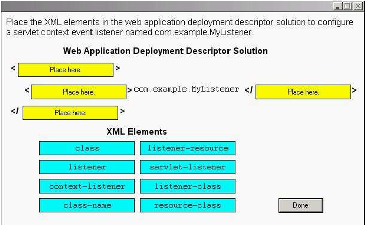

261~265
261.Which three are true about servlet filters? (Choose three.)
A. A filter must implement the destroy method.
B. A filter must implement the doFilter method.
C. A servlet may have multiple filters associated with it.
D. A servlet that is to have a filter applied to it must implement the javax.servlet.FilterChain interface.
E. A filter that is part of a filter chain passes control to the next filter in the chain by invoking the FilterChain.forward method.
F. For each <filter> element in the web application deployment descriptor, multiple instances of a filter may be created by the web container.
答案：A、B、C
備註：
- 需要實作的方法有三個：init(FilterConfig config)、doFilter(ServletRequst req, ServletResponse res, FilterChain chain)、destroy()(A、B正確)
- 在呼叫FilterChain的doFilter()方法時，會呼叫下一個過濾器或目標Servlet，所以同一個Servlet可以套用多個Filter(C正確，E錯誤)
- D選項：錯誤，套用Filter的Servlet不用實作FilterChain介面
- E選項：錯誤，一個
<filter>的設定只會產生一個Filter實體
相關說明：
講義 ch13(p.229)
Head First Servlets&JSP ch13 過濾器與包裹器(p.703開始)
Servlet&JSP教學手冊 ch5 Servlet進階API、過濾器與傾聽器(p.5-27)
猛虎出閘尊爵版 ch5 Web容器模型(p.5-9~p.5-11)
262.Click the Task button.
Place the XML elements in the web application deployment descriptor solution to configure a servlet context event listener named com.example.MyListener.

263.Which is true about the web container request processing model?
A. The init method on a filter is called the first time a servlet mapped to that filter is invoked.
B. A filter defined for a servlet must always forward control to the next resource in the filter chain.
C. Filters associated with a named servlet are applied in the order they appear in the web application deployment descriptor file.
D. If the init method on a filter throws an UnavailableException, then the container will make no further attempt to execute it.
答案：C
備註：
- A選項：錯誤，Container啟動時就會初始化Filter並呼叫其init方法
- B選項：錯誤，Filter可以選擇不將控制權交給Filter Chain的下一棒
- C選項：正確，Container會先比對
<url-pattern>的設定，找出符合的Filter，依照在部署描述檔中宣告的順序將它們放進Filter Chain中，之後再比對<servlet-name>的設定，找出符合的Filter，同樣依照在部署描述檔中宣告的順序將它們放進Filter Chain中 - D選項：錯誤，當init方法拋出UnavailableException時，Container可以檢查例外的isPermanent屬性並且能夠選擇稍候再重試Filter(參考Servlet 3.0規格書6.2.1)
相關說明：
講義 ch13(p.229~p.230)
Head First Servlets&JSP ch13 過濾器與包裹器(p.703開始)
Servlet&JSP教學手冊 ch5 Servlet進階API、過濾器與傾聽器(p.5-27~p.5-32)
猛虎出閘尊爵版 ch5 Web容器模型(p.5-9~p.5-10)
264.Your IT department is building a lightweight Front Controller servlet that invokes an application logic object with the interface:
public interface ApplicationController {
public String invoke(HttpServletRequest request)
}
The return value of this method indicates a symbolic name of the next view. From this name, the Front Controller servlet looks up the JSP URL in a configuration table. This URL might be an absolute path or a path relative to the current request. Next, the Front Controller servlet must send the request to this JSP to generate the view. Assume that the servlet variable request is assigned the current HttpServletRequest object and the variable context is assigned the webapp's ServletContext. Which code snippet of the Front Controller servlet accomplishes this goal?
A.
Dispatcher view = context.getDispatcher(viewURL);
view.forwardRequest(request, response);
B.
Dispatcher view = request.getDispatcher(viewURL);
view.forwardRequest(request, response);
C.
RequestDispatcher view = context.getRequestDispatcher(viewURL);
view.forward(request, response);
D.
RequestDispatcher view = request.getRequestDispatcher(viewURL);
view.forward(request, response);
答案：D
備註：題目提到要被轉發的URL可能會是絕對路徑或相對路徑，因此要使用ServletRequest的getRequestDispatcher，ServletContext的getRequestDispatcher(viewURL)的viewURL必須要以"/"開頭(從應用程式根目錄起算)，ServletRequest則是也能不以"/"開頭(相對於當前資源的路徑)
相關說明：
講義 ch8(p.150)
Head First Servlets&JSP ch5 屬性與偵聽器(p.206)
Servlet&JSP教學手冊 ch5 Servlet進階API、過濾器與傾聽器(p.5-8~p.5-9)
猛虎出閘尊爵版 ch5 Web容器模型(p.5-9)
265.Given that a web application consists of two HttpServlet classes, ServletA and ServletB, and the ServletA.service method:
20. String key = "com.example.data";
21. session.setAttribute(key, "Hello");
22. Object value = session.getAttribute(key);
23.
Assume session is an HttpSession, and is not referenced anywhere else in ServletA.
Which two changes, taken together, ensure that value is equal to "Hello" on line 23? (Choose two.)
A. ensure that the ServletB.service method is synchronized
B. ensure that the ServletA.service method is synchronized
C. ensure that ServletB synchronizes on the session object when setting session attributes
D. enclose lines 21-22 in a synchronized block:
synchronized(this) {
session.setAttribute(key, "Hello");
value = session.getAttribute(key);
}
E. enclose lines 21-22 in a synchronized block:
synchronized(session) {
session.setAttribute(key, "Hello");
value = session.getAttribute(key);
}